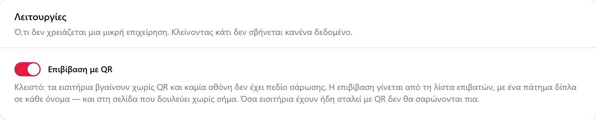
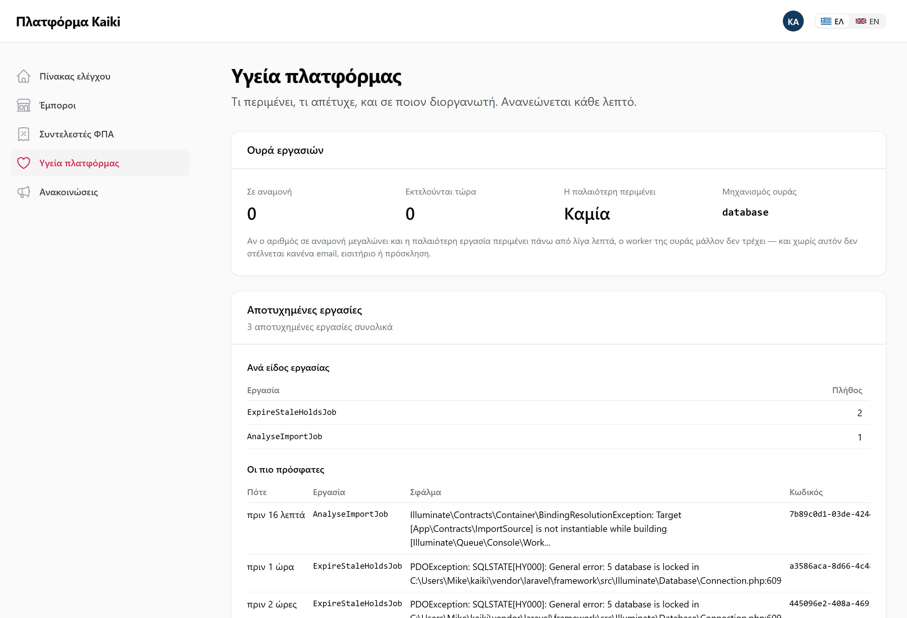
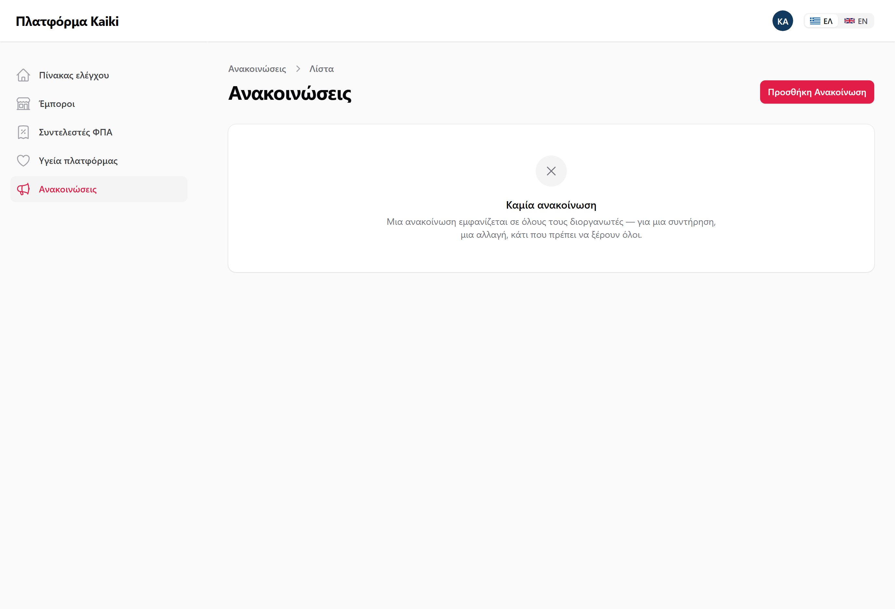

admin@kaiki.example και password.
Από εδώ και κάτω δεν κοιτάμε τα έτοιμα δεδομένα. Στήνουμε δική μας επιχείρηση από το μηδέν — που είναι ακριβώς αυτό που θα δει ο πρώτος πραγματικός πελάτης.
Ο διοργανωτής δεν εγγράφεται μόνος του. Τον ανοίγει η πλατφόρμα και στέλνει πρόσκληση στον ιδιοκτήτη.
admin@kaiki.example και password.

Πατήστε Νέος διοργανωτής. Η φόρμα ζητάει πέντε πράγματα και τίποτε άλλο.

| Πεδίο | Τι βάζουμε |
|---|---|
| Επωνυμία | Το όνομα της δοκιμαστικής επιχείρησης, π.χ. «Δοκιμαστικές Κρουαζιέρες» |
| Slug | Συμπληρώνεται μόνο του. Είναι η διεύθυνση της σελίδας — μικρά λατινικά και παύλες |
| Email χρέωσης | Της επιχείρησης. Δεν είναι λογαριασμός εισόδου |
| Ονοματεπώνυμο ιδιοκτήτη | Ποιος θα διοικεί |
| Email ιδιοκτήτη | Αυτό γίνεται ο λογαριασμός εισόδου. Πρέπει να είναι μοναδικό |
Ο λογαριασμός φτιάχνεται με έναν τυχαίο κωδικό που δεν βλέπει ποτέ κανείς, και ο ιδιοκτήτης ορίζει δικό του μέσα από σύνδεσμο. Ένας διαχειριστής που θα πληκτρολογούσε κωδικό θα έβαζε ένα λειτουργικό διαπιστευτήριο ξένης επιχείρησης σε ένα email και σε ένα τετράδιο.

Αμέσως μετά, ανοίξτε τον καινούργιο διοργανωτή από τη λίστα (Επεξεργασία) και κατεβείτε στην ενότητα Λειτουργίες.

Ρωτήστε τον διοργανωτή αν σαρώνει εισιτήρια. Ένα σκάφος με λίγους επιβάτες που τους ξέρει συνήθως όχι — τότε κλείνετε τον διακόπτη: τα εισιτήρια βγαίνουν χωρίς QR και η επιβίβαση γίνεται από τη λίστα, με ένα πάτημα δίπλα σε κάθε όνομα. Η αποθήκευση ζητά αιτιολογία, που τη βλέπει και ο ίδιος στο ιστορικό του.
Αφήστε το ανοιχτό προς το παρόν. Στο μέρος Ζ θα το κλείσετε για λίγο και θα δοκιμάσετε και τους δύο τρόπους επιβίβασης.
Πριν φύγετε από το /admin, δείτε τις δύο οθόνες που θα χρειαστείτε στο
μέρος Ζ. Στο αριστερό μενού:


Ανοίξτε http://192.168.1.43:8025 και θα τη δείτε — μαζί με κάθε άλλο
email που θα στείλει το Kaiki από εδώ και πέρα.
Αν βιάζεστε ή αν το email δεν έφτασε, υπάρχει εντολή που τυπώνει τον σύνδεσμο κατευθείαν. Από τον φάκελο kaiki, σε ένα PowerShell:
php artisan kaiki:invitation-link owner@example.com
Δοκιμαστής Ιδιοκτήτης — owner@example.com http://192.168.1.43:8000/app/password-reset/reset?token=...&email=...
Τότε το APP_URL δεν άλλαξε στο μέρος Α, βήμα 4. Ο σύνδεσμος θα
ανοίγει μόνο στο μηχάνημα που τον έφτιαξε και σε κανέναν άλλο. Διορθώστε το
.env, τρέξτε php artisan config:clear, και ζητήστε νέον
σύνδεσμο με την εντολή παραπάνω.